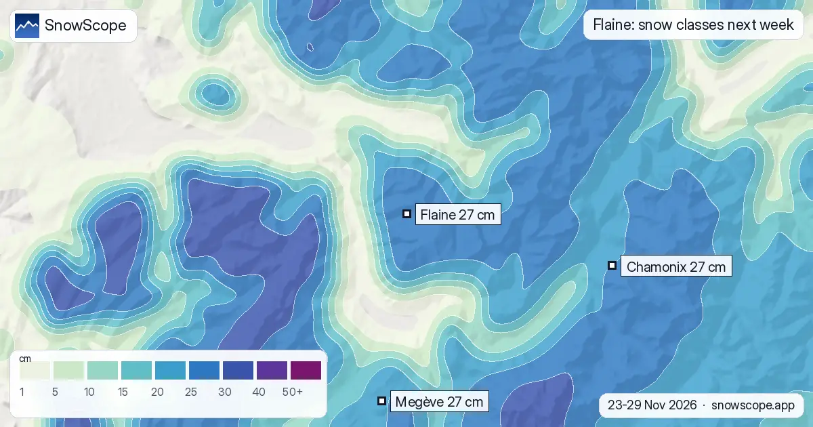

Flaine powder forecast next week (23–29 November 2026): 27 cm up top
After a big start this week (94 cm at the top from 17 to 20 November), Flaine lines up another round. Next week, 23 to 29 November, brings 27 cm up high in the middle of our forecast, anywhere from 9 to 46 cm, and 26 cm at the base.
See the live snow forecast for Flaine in the SnowScope appSnow depth, powder alerts and the 3D map, free.
What falls where on the Flaine slopes
Read from the top down: 27 cm near 2400 m, 27 cm near 2000 m, 26 cm near 1600 m. The low-to-high spread is 9–46 cm at the top and 8–45 cm at the base.
Most of the total arrives on Tuesday 24 (4 cm, up to 7), Wednesday 25 (8 cm, up to 11), Thursday 26 (6 cm, up to 10) and Sunday 29 (6 cm, up to 9), counted at the top as the middle of our forecast and the high case.

How nearby resorts compare
For comparison, the upper slopes of the closest big resorts collect Megève (18 km away) 27 cm, Chamonix (20 km away) 27 cm and Avoriaz (22 km away) 29 cm; Flaine sits at 27 cm.
A few centimetres either way is inside the forecast's own margin, so Flaine and its neighbours are effectively level.
Village level: white or wet?
The base gets nearly as much as the top (26 against 27 cm), which means the snow line stays below the lowest lifts for most of the week. Snow down to the village is the likely picture.
Flaine catches the first Atlantic storms that reach the northern French Alps.
This week in Flaine: the set-up
This week is the heavy one: 94 cm at the top between 17 and 20 November (range 69–119 cm), 37 cm at the base. Next week's snow falls onto that, which matters more than the size of the second round.
Picking your day in Flaine
Aim for the day after Wednesday 25 November. That day brings the biggest share at the top (8 cm, high case 11 cm), and the first clear morning after it gives the softest snow with some visibility.
The snow lies best on the Grandes Platières above the Flaine bowl. For the softest turns, look to the shaded Flaine bowl itself, which holds snow from the north-west storms. Lower down, Samoëns and Morillon lower down the Grand Massif will be the first to suffer if the air turns mild.
How sure is this?
Medium. Our range at the top runs from 9 to 46 cm, so the storm is likely but its size is not settled. Take the middle value as a guide, not a promise.
Book flexibly if you can: the picture for Flaine will be much sharper by the weekend.
Tips for skiers
- Fresh snow on a young snowpack: read the French avalanche bulletin (BERA) for the massif before any off-piste plan.
- Opening dates are the resort's call; our numbers only say how much snow is coming.
- Plan around the top's 27 cm, and keep the high case of 46 cm as a bonus.
More maps (external sites)
About these numbers
Snow numbers: our two-week snow forecast issued on 16 November 2026, read at three heights of the resort (top, mid-mountain, base). Each total is the middle of a range, with a low and a high case. These are estimates for the slopes, not resort measurements, and forecasts move from day to day: check the live map before you go.
Cite this report
For research, teaching or the press: the numbers and charts are free to reuse under CC BY 4.0 with this citation.
SnowScope (2026), Flaine powder forecast next week (23–29 November 2026): 27 cm up top, https://snowscope.app/blog/en/2026/11/flaine-powder-forecast-next-week-23-29-november-2026.html, accessed 2026-11-16
SnowScope (Atlas Labs). (2026, November 16). Flaine powder forecast next week (23–29 November 2026): 27 cm up top. SnowScope snow reports. https://snowscope.app/blog/en/2026/11/flaine-powder-forecast-next-week-23-29-november-2026.html
BibTeX
@misc{snowscope2026flainepowderforecastnext,
author = {{SnowScope (Atlas Labs)}},
title = {Flaine powder forecast next week (23–29 November 2026): 27 cm up top},
year = {2026},
month = nov,
howpublished = {\url{https://snowscope.app/blog/en/2026/11/flaine-powder-forecast-next-week-23-29-november-2026.html}},
note = {Published 2026-11-16 11:28 UTC; accessed 2026-11-16}
}· CC BY 4.0 · Methods, data and tools →
Flaine: snow and temperature by height, this winter vs last (tools) →
Follow Flaine
Free: a message when fresh snow is coming, and the forecast every morning.
More snow reports

Tignes snow conditions on 13 November 2026: 42 cm at the top (3447 m), 12 cm at 2503 m, a bare valley at 1559 m, and 99 cm forecast at the top over seven days, with rain below about 1700 m. How it compares with 46 past winters.

The Sillian (Hochpustertal) ski map with our snow layer on 13 November 2026: 8.6 cm on the top at 2399 m, bare lower slopes, and a week of mixed rain and snow with the snow line near 1,800 to 2,000 m.

Snow depth in Sölden on 13 November 2026: about 9 cm at the top (3245 m), 5 cm at mid-mountain, none in the valley at 1346 m. 25 cm forecast up high this week, rain below about 1620 m. Glacier vs village, with 46 past winters.